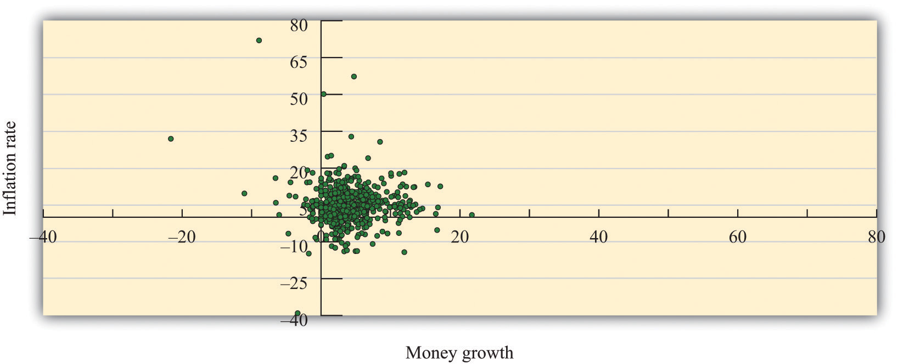
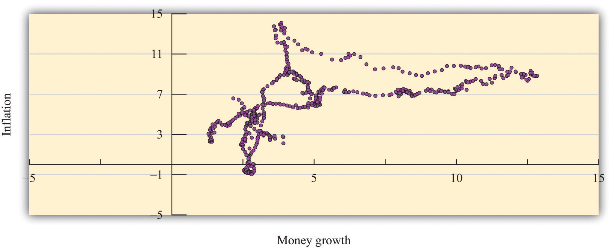
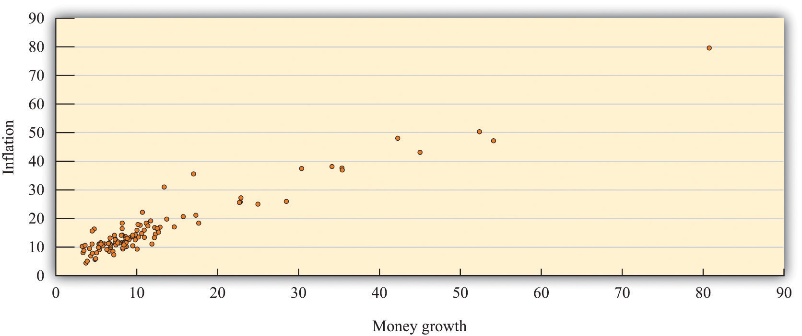
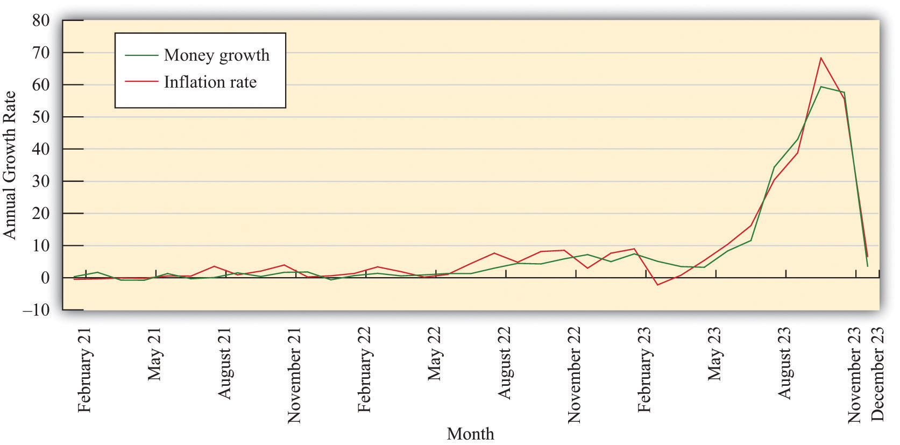
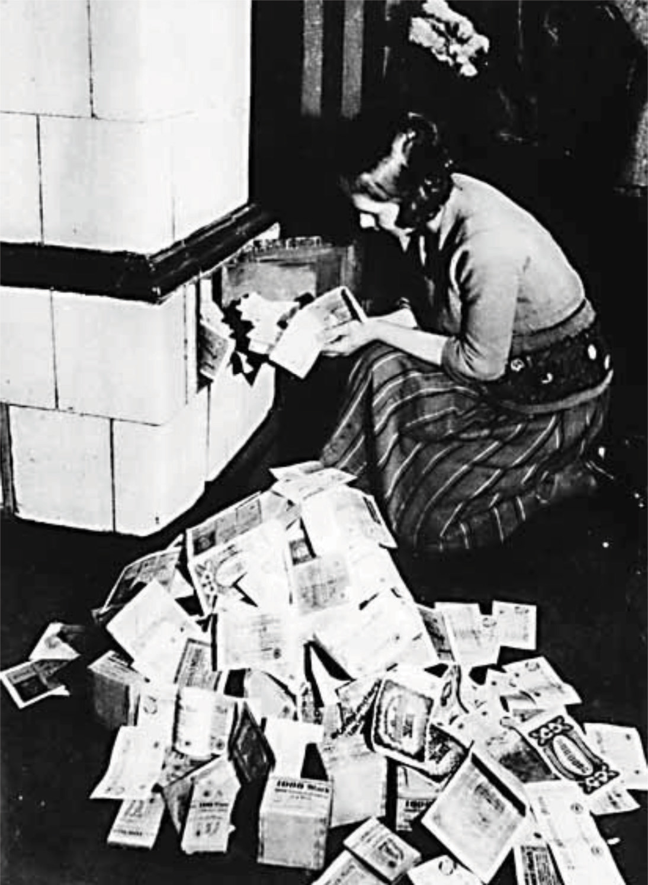

After you have read this section, you should be able to answer the following questions:
According to the quantity equation, the inflation rate and the rate of money growth are closely linked. As the famous economist Milton Friedman said, “Inflation is always and everywhere a monetary phenomenon.”This quote comes from Milton Friedman and Anna Schwartz, A Monetary History of the United States, 1867–1960 (Princeton, NJ: Princeton University Press, 1963). By this he meant that inflation could always ultimately be traced to “excessive” money growth. Keep in mind that we are talking about the long run here. Over shorter periods of time, changes in the money supply affect the level of real economic activity and have correspondingly less effect on the inflation rate.
Figure 26.4 "Inflation and Money Growth in the Short Run" and Figure 26.5 "Inflation and Money Growth in the Long Run" show the relationship between inflation and money growth for the United States. For this discussion, money growth is measured as M1. The rate of money growth is on the horizontal axis, and the annual inflation rate is on the vertical axis.
Figure 26.4 Inflation and Money Growth in the Short Run
Figure 26.5 Inflation and Money Growth in the Long Run
The two figures differ in the time horizon used to compute the growth rates. In Figure 26.4 "Inflation and Money Growth in the Short Run", month-to-month changes in money and prices are used to calculate annual growth rates. If you listen to a radio report or read the newspaper about inflation, typically you will first be told about the monthly Consumer Price Index (CPI) and then be given an annual inflation rate. The annual growth rate is the amount by which the variable would increase if the monthly growth rate persisted for a year. The conversion is simply to take the monthly percentage change and convert it into an annual percentage change by multiplying by 12. So if the CPI increased from 112 to 118 over the past month, then the change for the month would be calculated as follows:
If prices increased at this rate each month at this same rate, then prices would increase by 12 × 5.36 percent = 64.32 percent over the year. The data for Figure 26.4 "Inflation and Money Growth in the Short Run" start in January 1959 and end in December 2010. So the first observation is the annual percentage change between January and February 1959.
Figure 26.5 "Inflation and Money Growth in the Long Run" examines annual growth rates based on observing the money supply and the price level at five-year intervals. The first observation is the annual growth rate for the period starting in January 1959 and ending in January 1964. The annual growth rates for a five-year period are computed for each month starting in January 1964. Here, instead of multiplying a monthly growth rate by 12 to get an annual rate, we divide a five-year rate by 5 to get an annual rate. The point of examining growth rates over longer periods of time goes back to the idea that we are investigating the relationship between prices and the money supply over long periods of time.
Comparing these two figures, you can see that the relationship between money growth and inflation is much tighter when we examine five-year periods, as in Figure 26.5 "Inflation and Money Growth in the Long Run", rather than the monthly changes in Figure 26.4 "Inflation and Money Growth in the Short Run". This is consistent with the view that the relationship between money growth and inflation is a long-term relationship, not a short-term relationship.
In the monthly data, the link between money growth and inflation is relatively weak. The correlation, a measure of how closely two variables move together, is only 0.20 in the monthly data. In contrast, for the annual growth rates computed by looking over a five-year period, the correlation is about 0.65, indicating that money growth and inflation move more closely together over longer periods of time.
Toolkit: Section 31.23 "Correlation and Causality"
You can review the meaning and measurement of correlation in the toolkit.
In the United States, money growth and inflation rates are relatively moderate. Looking back at Figure 26.5 "Inflation and Money Growth in the Long Run", we see that the highest inflation rate in the past half-century was about 15 percent, in 1980. Some other countries have had a very different experience.
Figure 26.6 "Inflation and Money Growth in Different Countries" shows data on money growth and inflation from 110 countries.See George McCandless Jr. and Warren Weber, “Some Monetary Facts,” Federal Reserve Bank of Minneapolis Quarterly Review 19, no. 3 (Summer 1995): 2–11. The article provides a complete description of the data and the countries. On the vertical axis of the figure is the inflation rate, measured as the annual rate of change of the CPI. On the horizontal axis is the rate of growth of the money supply. So a point in the figure represents a single country and shows that country’s combination of inflation and money growth. The sample period used is 1960–1990, meaning that each point is an average over a three-decade period.
Figure 26.6 Inflation and Money Growth in Different Countries
Figure 26.6 "Inflation and Money Growth in Different Countries" clearly indicates that countries with high money growth are the countries that experience high inflation. If you were to draw a line through the points that came as close as possible to them, that line would have a positive slope. McCandless and Weber conclude as follows: “In the long run, there is a high (almost unity) correlation between the rate of growth of the money supply and the inflation rate. This holds across three definitions of money and across the full sample of countries and two subsamples.”George McCandless Jr. and Warren Weber, “Some Monetary Facts,” Federal Reserve Bank of Minneapolis Quarterly Review 19, no. 3 (Summer 1995): 2–11.
Most of the countries in Figure 26.6 "Inflation and Money Growth in Different Countries" have inflation and money growth that are less than 20 percent. There are some outliers, however. For example, there is one country with inflation and money growth at 80 percent annually over the sample. This country is Argentina; we return to it later. There have been episodes in history where the rates of inflation were so large that they are difficult to comprehend.
Table 26.1 "Prices in Germany" contains data for Germany in the early 1920s.The data come from Thomas Sargent, “The Ends of Four Big Inflations,” in Inflation: Causes and Effects, ed. Robert Hall (Cambridge, MA: National Bureau of Economic Research, 1982). The data in this case show the levels of wholesale prices because reliable consumer price indices were not available. The second column is a measure of prices for each month, from January 1922 to June 1924. The third column computes the annual inflation rate by multiplying the monthly inflation rate by 12. The final column indicates the amount of time in days it would take for prices to double at the annual inflation rate indicated in the third column. (When the number in the last column is negative, it tells you how long it would take the price level to halve.)
Table 26.1 Prices in Germany
| Month and Year | Price Level | Annual Growth Rate (%) | Doubling Time in Days |
|---|---|---|---|
| January 1922 | 3,670 | 60.3 | 419 |
| February 1922 | 4,100 | 133.0 | 190 |
| March 1922 | 5,430 | 337.1 | 75 |
| April 1922 | 6,360 | 189.7 | 133 |
| May 1922 | 6,460 | 18.7 | 1351 |
| June 1922 | 7,030 | 101.5 | 249 |
| July 1922 | 10,160 | 441.9 | 57 |
| August 1922 | 19,200 | 763.7 | 33 |
| September 1922 | 28,700 | 482.4 | 52 |
| October 1922 | 56,600 | 814.9 | 31 |
| November 1922 | 115,100 | 851.8 | 30 |
| December 1922 | 147,480 | 297.5 | 85 |
| January 1923 | 278,500 | 762.9 | 33 |
| February 1923 | 588,500 | 897.8 | 28 |
| March 1923 | 488,800 | −222.7 | −113.6 |
| April 1923 | 521,200 | 77.0 | 328 |
| May 1923 | 817,000 | 539.4 | 47 |
| June 1923 | 1,938,500 | 1036.8 | 24 |
| July 1923 | 7,478,700 | 1620.2 | 16 |
| August 1923 | 94,404,100 | 3042.6 | 8 |
| September 1923 | 2,394,889,300 | 3880.2 | 6 |
| October 1923 | 709,480,000,000 | 6829.4 | 4 |
| November 1923 | 72,570,000,000,000 | 5553.3 | 5 |
| December 1923 | 126,160,000,000,000 | 663.6 | 38 |
| January 1924 | 117,320,000,000,000 | −87.2 | −290 |
| February 1924 | 116,170,000,000,000 | −11.8 | −2140 |
| March 1924 | 120,670,000,000,000 | 45.6 | 555 |
| April 1924 | 124,050,000,000,000 | 33.2 | 763 |
| May 1924 | 122,460,000,000,000 | −15.5 | −1634 |
| June 1924 | 115,900,000,000,000 | −66.1 | −383 |
From the table, you can get a vivid sense of the pace of prices simply by counting the number of digits used to describe the price level. At the height of the inflation in October 1923, the annual inflation rate was over 6,800 percent. It is hard to make sense of a number like this, which is why we include the fourth column: at this inflation rate, prices double every 3 to 4 days. Rapid inflation of this kind is called hyperinflationA period of very high and often escalating inflation..
Where does hyperinflation come from? The quantity theory tells us that the rapid price increases must be related to growth in the money supply, a reduction in output growth, or rapid growth in the velocity of money. Drawing on the quote from Milton Friedman, it is natural to first examine the growth rate of the money supply. Figure 26.7 "Money Growth and Inflation in Germany" shows the money growth and inflation rates for Germany during this period. The graph clearly shows that as prices were exploding in Germany, so too was the money supply. In 1922, prices increased 93 percent, and the money stock grew at 52 percent. In the following year, the average inflation rate was up to 433 percent, and the money supply grew at almost 300 percent.These are calculated as January to January growth rates.
In October 1923, when the inflation rate peaked at over 6,800 percent, the money supply grew at nearly 6,000 percent on an annual basis. According to economist Thomas Sargent, 99 percent of the outstanding bank notes had been put in circulation during the previous month. At that point, both prices and the money supply were doubling in a matter of days. Thus the escalating prices were matched by enormous increases in the money supply.
Figure 26.7 Money Growth and Inflation in Germany
At first glance, the German data seem to confirm the idea that large inflation rates are driven by large money growth rates. On closer examination, though, we notice that the inflation rates were greater than the growth rate of the money supply. Yet we said earlier that
inflation rate = growth rate of money supply + growth rate of velocity − growth rate of output.It follows that the velocity of money must have been increasing or output must have been decreasing.
It is plausible, indeed likely, that the velocity of money will increase during a period of very high inflation. If you know that the cash in your pocket will lose its value from one hour to the next, then you want to get rid of it quickly. During the German hyperinflation, anyone with cash wanted to exchange it as quickly as possible for goods and services. Thus money changed hands more and more rapidly: in other words, the velocity of money increased.
Money had ceased to perform one of its key functions. It was no longer a store of value. Even if people were still using money as a medium of exchange, they could no longer rely on money to keep its value. A monetary system is a fragile institution: its success depends on everyone believing in it.See Chapter 24 "Money: A User’s Guide" for more discussion. People are willing to accept money because they think that others will, in turn, be willing to accept it from them. During a hyperinflation, this system breaks down. People are reluctant to accept money because they know that others will not want to accept it from them.
Rapid inflation is also disruptive to the general functioning of the economy. People have to devote much more time and energy to managing their cash. People insist on being paid more frequently and abandon work to shop as soon as they are paid. Furthermore, as discussed later, inflation acts as a tax on work. So higher inflation means a higher tax and thus a reduction in employment and output. Overall, output does tend to decrease during hyperinflation, increasing the inflation rate still further. For Germany, real output decreased by 46 percent in 1923 during the height of the hyperinflation. In contrast, 1924 was a good year for the economy, with real output growing at 35 percent.
So while rapid money growth sets hyperinflation in motion, hyperinflation then becomes self-fueling, powered by increases in the velocity of money and—to a minor extent—decreases in the growth rate of output. In the end, the system can collapse completely, with people no longer being willing to accept money at all. In Germany, this is what eventually happened. There are many anecdotes surrounding the German hyperinflation: children using piles of money as building blocks, households using money as wallpaper, and so forth. Figure 26.8 "The Use of Money in a Hyperinflation" shows money being used in a furnace to heat a home.
Figure 26.8 The Use of Money in a Hyperinflation
In December 1923, the hyperinflation came to an end. Look again at Table 26.1 "Prices in Germany". Prices in that month had increased to around a billion times greater than they had been two years previously. But from then the price level stayed roughly steady. In fact, it decreased for the next two months, then fluctuated somewhat. The price level in June 1924 was lower than it was at the start of the year. There is thus a new mystery to solve: what happened to bring the inflation to an end? We return to this question shortly.
We discussed the example of Germany in some detail because it is one of the most dramatic hyperinflations ever. But hyperinflations are not simply the stuff of economic history. Indeed, from around 2003 to 2009, the African country of Zimbabwe was embroiled in severe inflation. In 2008, prices were doubling on an almost daily basis. Banknotes were issued in denominations of 100,000,000,000,000 Zimbabwe dollars.“Zimbabwe Hyperinflation ‘Will Set World Record within Six Weeks,’” The Telegraph, November 13, 2008, accessed August 22, 2011, http://www.telegraph.co.uk/news/worldnews/africaandindianocean/zimbabwe/3453540/Zimbabwe-hyperinflation-will-set-world-record-within-six-weeks.html, accessed August 22, 2011; “A Worthless Currency,” The Economist, July 17, 2008, accessed August 22, 2011, http://www.economist.com/node/11751346?story_id=E1_TTSVTPQG, accessed August 22, 2011.
Table 26.2 "The Start of the Hyperinflation in Zimbabwe" presents some basic economic facts about Zimbabwe as it entered the hyperinflation; the data come from an International Monetary Fund country report (http://www.imf.org/external/pubs/ft/scr/2005/cr05359.pdf). Looking at these numbers, one is immediately struck by the severity of the decline in economic activity: real gross domestic product (GDP) decreased every year since 2000, including an 11 percent decline in 2003. At the same time, the country experienced rapid inflation, reaching nearly 600 percent in 2003. As indicated by the third row of the table, the money supply (measured as M1) grew rapidly in 2003 and 2004, fueling the inflation.
Table 26.2 The Start of the Hyperinflation in Zimbabwe
| Variable | 2000 | 2001 | 2002 | 2003 | 2004 |
|---|---|---|---|---|---|
| real GDP growth (% change, market prices) | −7.3 | −2.7 | −4.4 | −10.9 | −3.5 |
| consumer prices (% change) | 55.2 | 112.1 | 198.9 | 598.7 | 132.7 |
| money supply (billions) | 52.6 | 128.5 | 348.5 | 2,059.3 | 6,867.0 |
Stories from Zimbabwe resemble the experiences from the 1920s in Germany. The British Broadcasting Company presented some interviews about life during this period of rampant inflation.
THE STUDENT When I go to withdraw my money, I have to wait around 30 minutes because there are so many people waiting.
It’s so difficult.
Maybe you want 10 million but they only give you 2.8, because there is not enough at the bank.
THE LECTURER Children in Harare play in uncollected rubbish. Hyperinflation has meant an end to rubbish collections. It’s a very strange environment.
There are a lot of pay rises, but they are meaningless.
They are always eroded the minute they give us the pay rise.
Also, considering we have so much to pay—we have parents in the countryside, and we have families—it doesn’t work.
People are willing to lend money, but they are not willing to lend it for nothing. It’s usually at a rate of 90 or 100 percent.
Sometimes these are your relatives or people you work with, taking advantage of this.
People are cannibalizing each other.
THE MOTHER Because my income hasn’t risen as much as the prices in the shops, we have had to adjust quite a bit.
The things that we buy—the groceries at home, the things we get for our two children—we have to buy immediately, as soon as we get the money.
We know that if we wait a bit, the prices are going to go up again. If we wait another week, we will not be able to afford anything.
People are taking the money out in suitcases or carrier bags.“Zimbabwe: Living with Hyperinflation,” BBC News, January 31, 2006, accessed July 21, 2011, http://news.bbc.co.uk/2/hi/africa/4665854.stm.
Zimbabwe’s citizens increasingly turned to other currencies to conduct transactions, even though the Zimbabwe dollar was officially the only legal tender in the country. The Zimbabwe hyperinflation eventually ended in January 2009, when the Finance Minister officially permitted citizens to use other currencies in places of the Zimbabwe dollar.“Zimbabwe Abandons Its Currency,” BBC News, January 29, 2009, accessed August 22, 2011, http://news.bbc.co.uk/2/hi/7859033.stm.